Instruktor fitness
Licence od roku 2022, naplno od konce roku 2025
Osobní trenér Praha 10 • Fitness Victory Záběhlice
Trénink a spolupráce podle tvých cílů. Nezajímá mě univerzální plán pro každého, ale to, co chceš ty — a jak tě tam dostat.
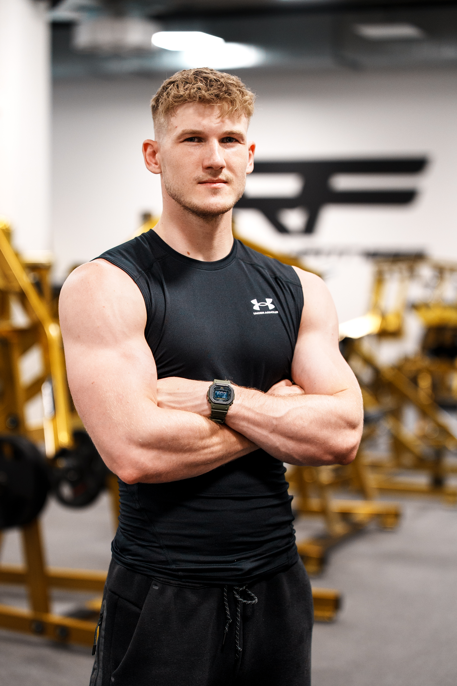
Licence od roku 2022, naplno od konce roku 2025
Pohyb, technika a prevence přetížení
Kickbox, Sanda, MMA, I. Tjie
Pády a bojová choreografie pro film a seriály
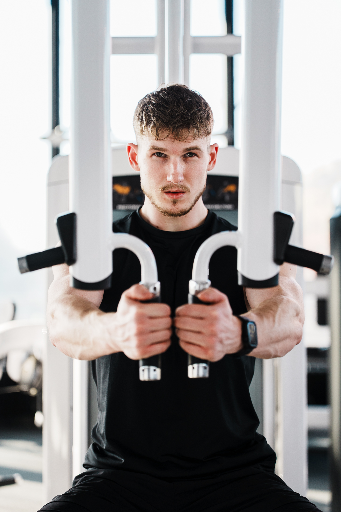
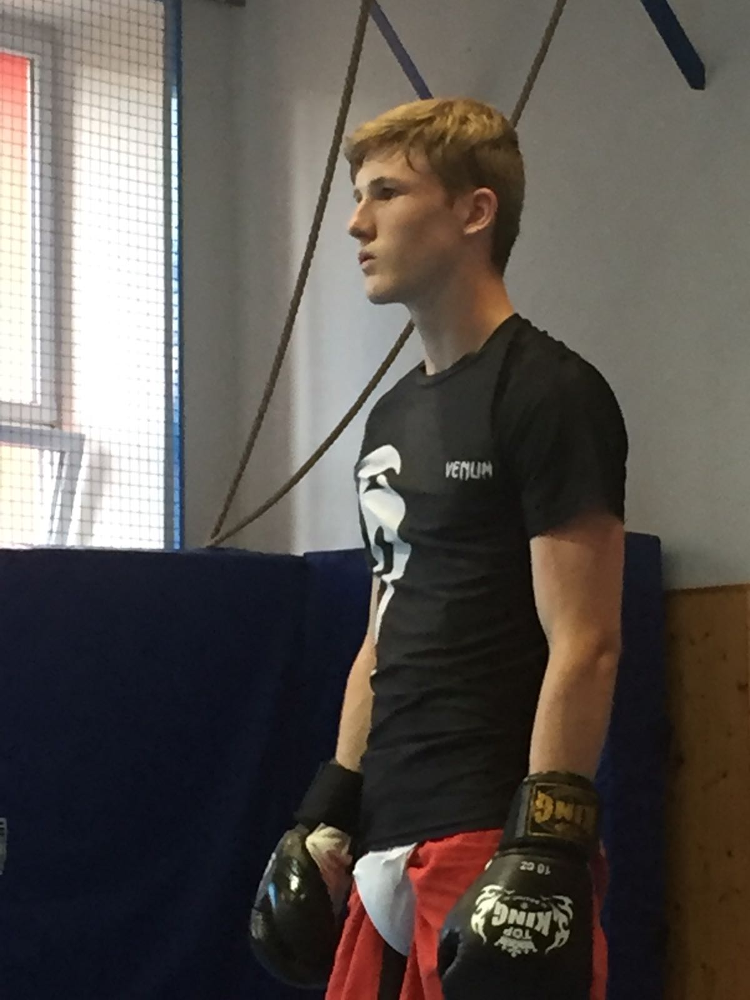
Kdo jsem
Začínal jsem s 62 kg a strachem vejít do posilovny. Po pár měsících mi došlo, že bez správného vedení dělám spoustu věcí špatně. Právě tehdy jsem si zaplatil trenéra — a pochopil, jak zásadní rozdíl dělá kvalitní přístup, technika a systém.
Dnes pracuji jako osobní trenér, věnuji se GOATĚ, bojovým sportům od dětství a vedle toho i filmovému kaskadérství se zaměřením na pády a bojovou choreografii. V tréninku tak kombinuji reálnou zkušenost, precizní techniku a přístup postavený na cíli klienta.
Instruktor fitness • GOATA Coach • I. Tjie
Kickbox, Sanda, MMA a amatérské závody
Netflix projekty, videohry i akční choreografie
Osobně ve fitku i online podle tvého režimu
Služby
Každá spolupráce se odvíjí od tvého cíle, možností a aktuální úrovně. Žádný univerzální plán pro všechny.
Trénink podle tvého cíle — síla, svaly, hubnutí i technika.
Lepší pohyb, menší přetížení a tělo připravené na sport i běžný život.
Technika, fyzička, rychlost i výbušnost pro začátečníky i pokročilejší.
Součást spolupráce — kalorie, regenerace, návyky a to, co má opravdu smysl.
Můj přístup
Nejde jen o to zvedat větší váhy. Jde o to posouvat se bez chaosu, bez zbytečných zranění a s jasným směrem.
Každý cvik řešíme s plným vnímáním těla — správná technika, aktivace svalu a kontrolovaný pohyb.
Výsledek bez zranění. Trénink má tělo posilovat, ne opotřebovávat.
Nezajímá mě průměrný plán. Zajímá mě, co chceš ty — a podle toho stavíme spolupráci.
Hledám cestu, která funguje a kterou vydržíš dlouhodobě i v reálném životě.
„Pan Pravítko“ — přezdívka od klienta, kterou beru jako kompliment.
První konzultace zdarma
Setkáme se ve Victory Fitness Záběhlice, v kavárně vedle nebo online přes videohovor — podle toho, co ti víc vyhovuje.
Recenze klientů
Výsledky nejsou jen o plánu. Jsou i o tom, jestli ti spolupráce sedne lidsky a vydrží dlouhodobě.
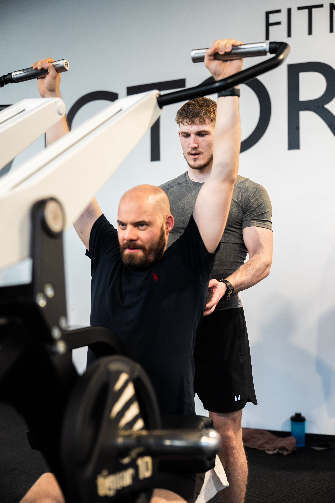
„Vždycky přijdu s tím, že to dneska vezmeme v klidu… a Emil se jen usměje. Za chvíli funím jak lokomotiva. A víte co je nejhorší? Že to funguje.“
Martin Kráčala
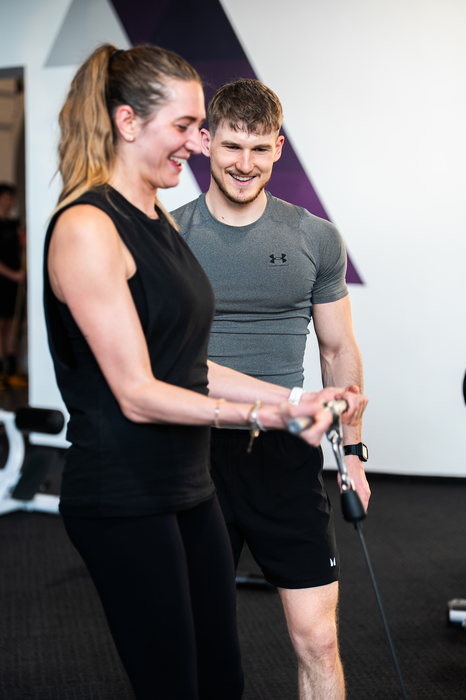
„Byla to trefa do černého. Kombinace silového tréninku a GOATY je přesně to, co potřebuju. Sedí mi hlavně lidsky — a to je pro mě důležitý faktor.“
Lucie Marešová
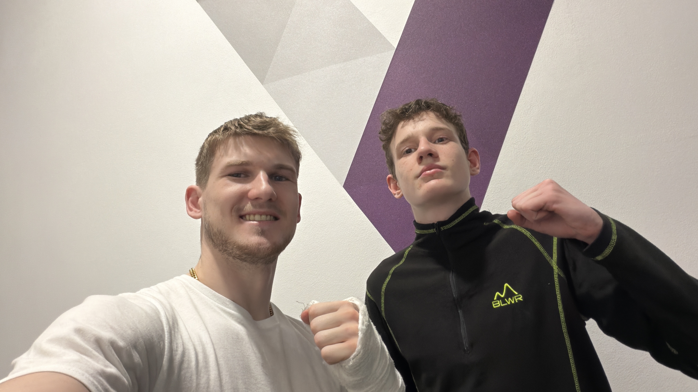
„Opravdu si vážím tvého přístupu. Díky tomu vidím na sobě pokroky a mám chuť na sobě dál makat.“
Vojta Maňas
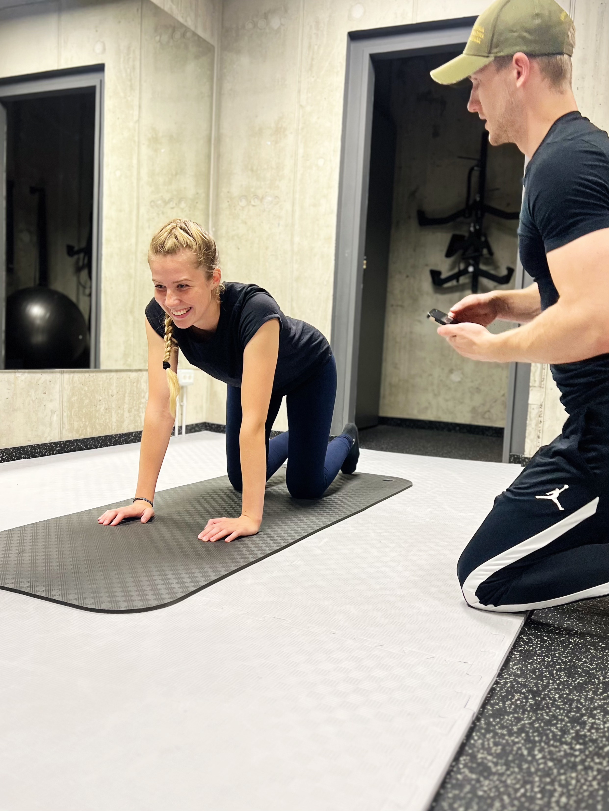
„Každý trénink přizpůsobí mým možnostem, ale zároveň mě vždy dokáže posunout dál.“
Kačka Janovská
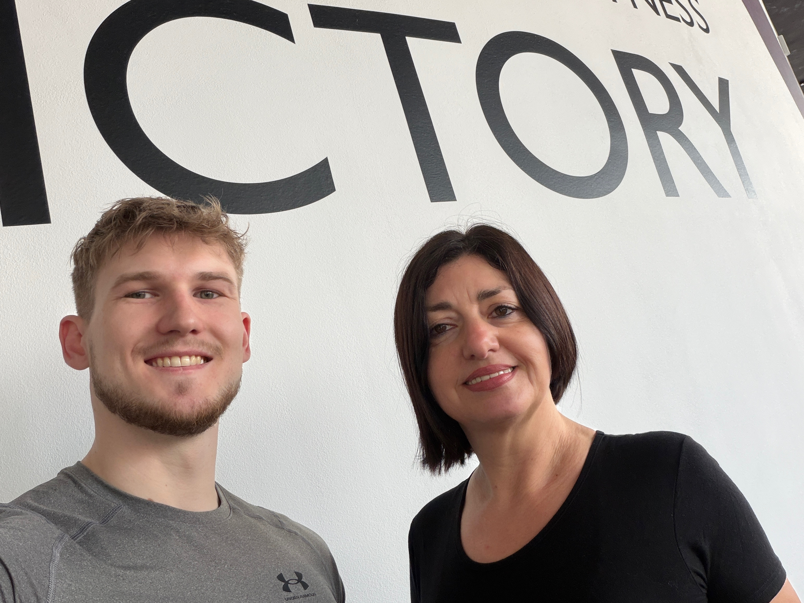
„Konečně jsem se naučila správně dřepovat, aniž by mě bolela záda.“
Svetlana Pashkovska
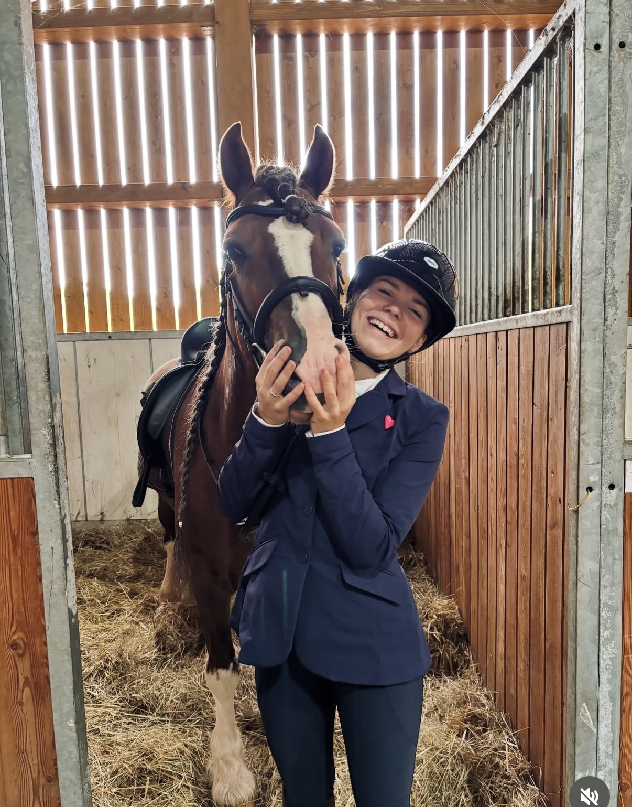
„Na trénink s Emčou se vždycky těším. Konečně mi někdo pořádně vysvětlil, jak a proč cviky fungují.“
Barča Švagrová
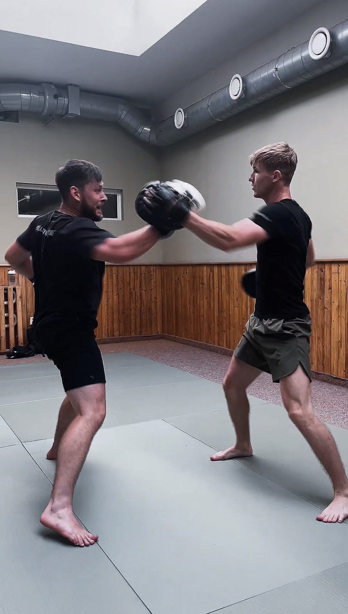
„Tréninky mě konečně začaly bavit. Všechno vysvětlí a motivuje přesně tak, jak potřebuju.“
Jiří Beneš
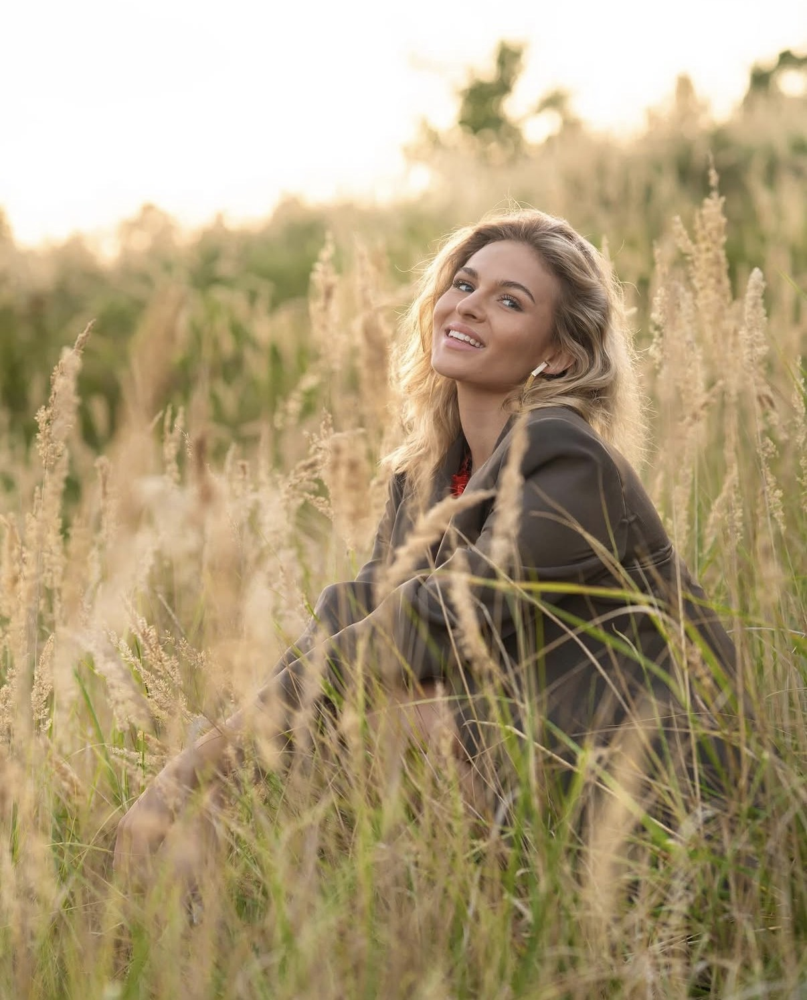
„Moc oceňuji profesionální a vždy milý přístup.“
Kateřina Štafová
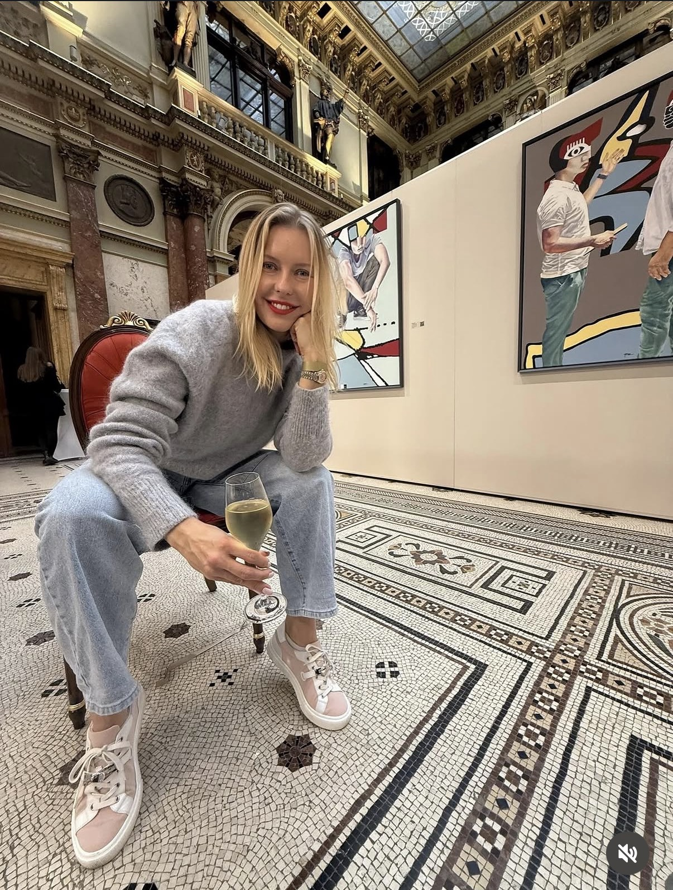
„Tréninky jsou skvěle vedené, mají jasnou strukturu a vždy přinesou něco nového.“
Barbora Budková
Kontakt
Napiš mi, s čím chceš pomoct a jaké časy ti vyhovují. Společně vymyslíme první krok.
Victory Fitness Záběhlice
Topolová 2963/12, 106 00 Praha 10